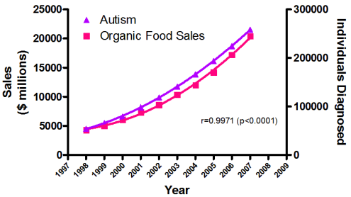
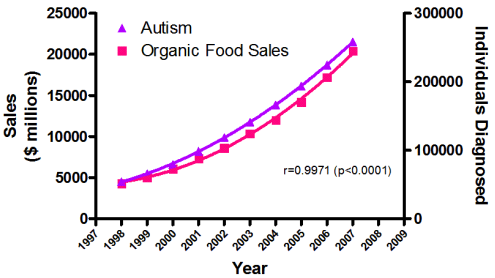

Metodi di Psicofisiologia e Neuroimaging nella Clinica e nelle Neuroscienze Cognitive
Module 2 - Biomarkers
Raffaele M Mazziotti, PhD
University of Florence
Why this course?
Psychology traditionally relies on:
behavior
self-report
clinical judgment
These tools are powerful, but limited.
Biomarkers promise objectivity, quantification, prediction, and personalization.
The promise of biomarkers
Biomarkers are expected to:
reduce subjectivity
link behavior to biology
improve diagnosis and prognosis
guide treatment decisions
enable personalized approaches
Key question:
What do we mean by “biomarker”?
A widely accepted formal definition (NIH / FDA ):
A biomarker is a defined characteristic that is measured as an indicator of normal biological processes , pathogenic processes, or responses to an intervention.
Key points embedded in the definition:
it is a measurement
it is an indicator , not a diagnosis
it is tied to a specific process or response
Immediate implications:
biomarkers are indirect
biomarkers are context-dependent
biomarkers are not explanatory by default
What do we mean by “biomarker”?
Objective does not mean useful. A measure can be:
objective
precise
reproducible
And still be clinically useless.
Typical reasons:
large overlap between patients and controls
no added value over clinical assessment
Psychiatry and psychology still lack:
robust diagnostic biomarkersclinically actionable predictors
Many proposed biomarkers:
are statistically significant
fail in real clinical settings
The core epistemological problem
Neurological, Psychiatric and Psychological phenomena are:
heterogeneous
dynamic
multidimensional
Biological systems reflect this complexity. As a result, one-to-one mappings
graph LR
B1[Biomarker A] --> D1[Disorder 1]
B1 --> D2[Disorder 2]
B2[Biomarker B] --> D1
B2 --> D3[Disorder 3]
B3[Biomarker C] --> D2
B3 --> D3
subgraph Biomarkers
B1
B2
B3
end
subgraph Disorders
D1
D2
D3
end
Biomarkers are not “truth machines”
Biomarkers do not reveal truth directly. They are probabilistic signals.
Most biomarkers are correlates, not causes.
A biomarker may:
change with a disorder
track symptom severity
predict outcomes
Without explaining why. Biomarkers are not mechanisms .
Group-level vs individual-level thinking
Most biomarkers are discovered at the group level. Clinical decisions are made at the individual level.
Research question:
“Is there a difference between groups?”
Clinical question:
“Can I make a decision for this person?”
These are fundamentally different problems.
A biomarker can be:
statistically significant
and useless for deciding about a single patient
Biomarkers should be understood as:
decision-support tools
not decision-makers
They complement:
clinical judgment
contextual information
What counts as a biomarker?
A biomarker can be:
molecular (genes, proteins, metabolites)physiological (heart rate variability, cortisol)
neural (EEG features, imaging-derived measures)
behavioral (reaction times, eye movements)
computational (scores derived from multiple measures)
Biomarkers are not limited to biology at the molecular level .
What a biomarker is NOT
A biomarker is not:
a diagnosis
a symptom
a risk factor
an endophenotype
a clinical judgment
a mechanism
A biomarker can be a risk factor, but not all risk factors are biomarkers.
Mechanisms:
explain how a process works
imply causal structure
Endophenotypes:
are heritable traits
lie between genes and behavior
are relatively stable
Context of Use (CoU)
A biomarker is only defined together with:
a target population
a clinical or research question
Without a Context of Use:
performance cannot be evaluated
usefulness cannot be judged
The same measured characteristic can be:
a biomarker in one context
irrelevant in another
misleading in a third
Biomarkers are multidimensional objects
Biomarkers are often introduced as simple categories or lists. In reality, biomarkers vary along multiple dimensions.
Dimension 1: Biological Level
molecular
cellular
physiological
neural
behavioral
Lower-level does not mean:
more objective
more specific
more clinically useful
A genetic marker can be less useful than a behavioral one.
Dimension 2: Temporal stability
Biomarkers differ in how they change over time . Two broad classes :
trait-like biomarkersstate-dependent biomarkers
Trait biomarkers are:
relatively stable
minimally affected by context
often present before symptoms
Examples: genetic variants, structural brain features. They are often used for risk or susceptibility.
State biomarkers:
fluctuate over time
reflect current condition or context
are sensitive to environment and intervention
Examples: cortisol, EEG power, arousal
Trait
Stable
Often weak predictors
State
Sensitive
Prone to bias
Dimension 3: Specificity
Biomarkers differ in how specific they are.
Specificity can be:
disorder-specific
dimension-specific
transdiagnostic
Psychological/Psychiatric biomarkers are often transdiagnostic.
Many biomarkers in Psychology:
appear across multiple disorders
reflect shared processes
Mental disorders are:
heterogeneous
overlapping
not defined by single mechanisms
Therefore, biomarkers rarely show one-to-one mappings.
Dimension 4: Measurement context
Biomarkers depend on:
how they are measured
where they are measured
under which conditions
Laboratory vs real-world measures can differ substantially. A biomarker may work:
in controlled experimental settings
but fail in clinical practice
Measurement context directly affects:
reliability
validity
interpretability
Dimension 5: Functional role
Biomarkers differ by what they are used for :
detectionpredictionmonitoringstratification
The same biomarker can serve different roles.
Example: EEG feature
diagnostic marker in one context
prognostic marker in another
monitoring marker in treatment studies
Function is not intrinsic to the measure.
Biomarker Evaluation
Biomarkers are not evaluated by intuition.
They are evaluated by:
measurement quality
error structuredecision consequences
A biomarker must be reliable before being useful.
Reliability refers to:
test-retest stabilityinter-rater consistencyrobustness across contexts
If a biomarker varies because of:
measurement noise
equipment differences
context instability
Then any observed association may be spurious. Reliability sets the upper limit of usefulness.
Biomarker Evaluation: Validity
Validity is contextual and it is not a single property. A biomarker can be:
valid for one purpose
invalid for another
Key forms of validity:
Predictive validity is the most relevant for clinical use.
Error Structure
Every biomarker makes errors. There is no error-free biomarker.
When using a biomarker to classify or predict, there are 4 possible outcomes:
true positive
false positive
true negative
false negative
Every decision falls into one of these categories.
Disorder
Biomarker
Present
Absent
Positive
True positive
False positive
Negative
False negative
True negative
Error Structure
A false positive occurs when:
the biomarker indicates a condition
but the condition is not present
Consequences:
unnecessary alarm
overdiagnosis
inappropriate intervention
A false negative occurs when:
the biomarker fails to detect a condition
that is actually present
Consequences:
missed diagnosis
delayed intervention
false reassurance
Which error is worse depends on context.
Accuracy, Sensitivity and specificity
Accuracy:
Ability to detect a condition correctly
Sensitivity:
ability to detect a condition when it is present
Specificity:
ability to exclude a condition when it is absent
They describe different aspects of performance.
Increasing sensitivity often:
increases false positives
Increasing specificity often:
increases false negatives
Confusion matrix
Confusion matrix and performance metrics for a biomarker
Predicted class
Performance metric
Actual class
Positive
Negative
Positive
True positive (TP)
False negative (FN)
Sensitivity
Negative
False positive (FP)
True negative (TN)
Specificity
—
Precision
Negative predictive value
Accuracy
A confusion matrix, also known as error matrix is a specific table layout that allows visualization of the performance of a Biomarker.
Thresholds create errors
Most biomarkers require a threshold.
Changing the threshold:
changes sensitivity
changes specificity
changes error balance
ROC curves describe:
trade-offs between sensitivity and false positives
performance across thresholds
Clinical utility is not accuracy
High accuracy alone is insufficient.
Clinical utility depends on:
consequences of errorspossibility to use across contexts
added value over clinical judgment
A slightly better biomarker can still be useless.
Functional classification of biomarkers
According to regulatory and clinical frameworks, biomarkers can be used as:
diagnosticprognosticpredictivemonitoring
Diagnostic biomarkers
Diagnostic (classification) biomarkers are used to:
detect the presence of a conditionsupport or refine a diagnosis
identify subtypes of a condition
For diagnostic biomarkers:
false positives are especially harmful
specificity is critical
prevalence strongly affects usefulness
They answer the question:
Is this condition present?
Prognostic biomarkers
Prognostic biomarkers provide information about:
future course of a condition
likelihood of progression, relapse, or recovery
Prognostic biomarkers:
are independent of treatment
describe natural history
often work at the group level
They answer the question:
What is likely to happen over time?
Predictive biomarkers
Predictive biomarkers estimate:
likelihood of response to an intervention
likelihood of side effects
Predictive biomarkers are:
central to personalized medicine
highly attractive clinically
extremely difficult to validate
They require comparison across treatments.
They answer the question: Will this treatment work for this person?
Monitoring biomarkers
Monitoring biomarkers are used to:
track changes over time
assess response or progression
support ongoing decisions
Examples:
physiological stress markers
EEG changes during treatment
behavioral performance over time
They answer the question:
Is the condition changing over time?

 
.png)